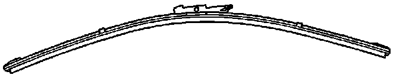

Wipers - Wipers Streak the Windshield at Low Speeds
TECHNICALBulletin No.: 07-08-43-010A
Date: March 03, 2008
Subject:
Windshield Wiper Streak at Low Vehicle Speeds (Replace Windshield Wipers and Arms)
Models:
2007-2008 Cadillac Escalade, Escalade ESV, Escalade EXT
2007-2008 Chevrolet Avalanche, Suburban, Tahoe*
2007-2008 GMC Denali, Denali XL, Yukon, Yukon XL
*Excludes Tahoe Police Package
Attention:
This bulletin does NOT apply to Chevrolet Silverado or GMC Sierra Pickups. The pickups have a different wiper arm design.
Supercede:
This bulletin is being revised to add an Attention statement. Please discard Corporate Bulletin Number 07-08-43-010 (Section 08 - Body and Accessories).
Condition
Some customers may comment that the windshield wipers streak the windshield and do not clean properly at low vehicle speeds.
Cause
This condition may be caused by low blade pressure to the windshield.
Correction


Replace the wiper blades with conventional styled blades. The wiper arms will also have to be replaced.
1. Open the hood.
2. Remove the windshield wiper arm finish cap. Use a small flat-bladed tool to remove the finish cap.
3. Remove the wiper arm nut and disconnect the washer hose.
4. Remove the wiper arm using the J 39637-A - Wiper Arm Puller.
5. Install the wiper to the wiper arm and remove the plastic union from the new assembly.
6. Install the wiper arm assembly to the vehicle. Line up and hold the blade to the vertical black bar target mark located at the lower center portion of the windshield and tighten the nut.
Tighten
Tighten the nut to 30 N.m (22 lb ft).
7. Install the windshield washer hose.
8. Install the finish cap.
9. Close the hood.
Parts Information
Warranty Information
For vehicles repaired under warranty, use the table.

Disclaimer